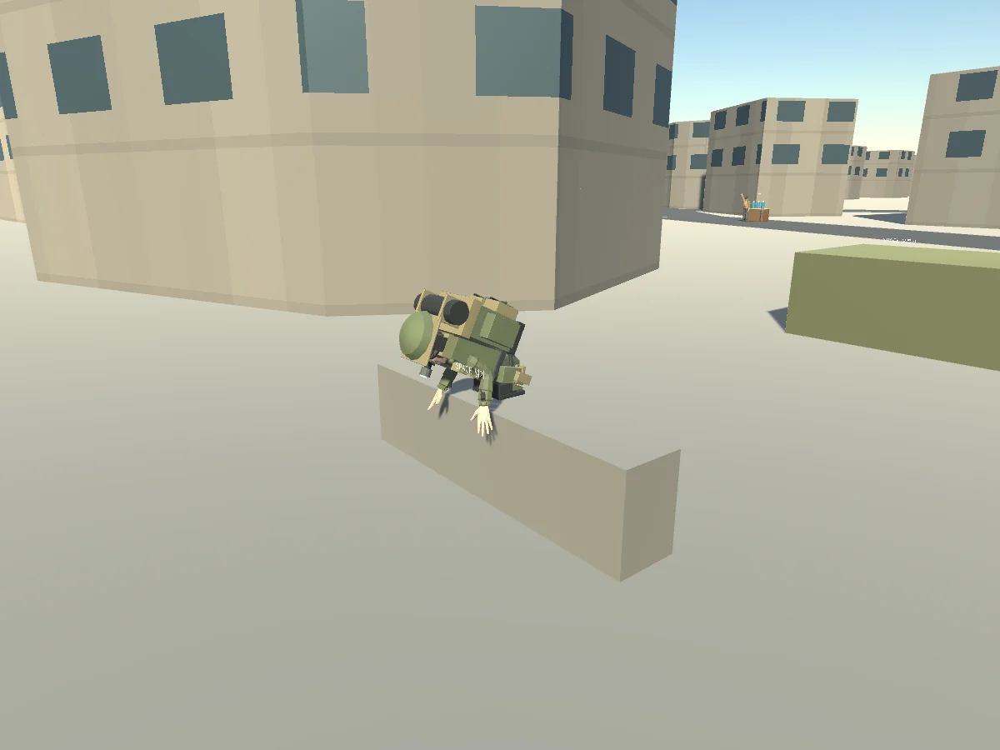

Tracefolio REPORTS & ISSUES
Tracefolio REPORTS & ISSUES공용 리그 행동 FBX 바인딩·빈 이동 상태 예외 수정
해결원본 키프레임·Unity 곡선 경로와 실행 예외를 대조해 리그 부모 계층과 미지정 중첩 상태 처리를 수정했습니다.
작업 결과
행동10클립 본 변화·23개 Native 검사·실제 Web 행동14개·양방향 구조물 장면과 엔진 예외0을 확인했습니다.
변경 내용
재현 조건
Unity6000.0.83f1 Generic rig, Blender5.2.3 LTS, Windows/WebGL.
재현 순서
애니메이션 전용 FBX를 기존 Survivor에 연결하고 여러 시점의 본 회전을 비교했습니다. 이어 서버에서 motion이 없는 기본 캐릭터로 실행했습니다.
기대 동작
기존 캐릭터의 동일 본 경로로 클립이 연결되고 비활성 이동 상태에서도 게임이 실행됩니다.
실제 동작
Blender 원본/FBX 곡선은 있었지만 기존 CharacterArmature/Root와 새 Root 경로가 달라 Unbound action clip이 발생했습니다. 이후 실제 실행에서 비어 있는 motion.from을 읽으며 ActionPosition NullReferenceException이 발생했습니다.
원인
Unity가 메쉬 없는 FBX의 CharacterArmature 부모를 생략해 Generic 경로가 달랐습니다. JsonUtility에서 비어 있는 중첩 객체를 받을 때 from/to가 존재한다고 가정한 접근도 확인했습니다.
적용 내용
기존 캐릭터와 같은 계층으로 FBX를 내보내고10클립을 실제 본에서 여러 프레임 비교합니다. from/to/기간이 없는 중첩 이동 상태는 일반 위치로 처리합니다. 종료 코드뿐 아니라 실행 예외 로그도 검사합니다.

검증
10클립 모두 본 변화, 숙인 머리 약0.419m 감소/발0.041m, 장비14부착, 실제 Web14개·최종82서버 테스트·양쪽 traverse 시선1.0, Native/Web 실행 예외0을 확인했습니다. 실패/곡선/렌더 근거는 docs/qa/actions에 보존했습니다. 현재 Generic FBX 계층의 프로젝트 상세를 docs/EQUIPMENT_ACTIONS.md에 기록했고 기존 전역 검증 지침과 중복되어 전역 변경 없음입니다.
남은 사항
수정한 범위를 실제 재검증했습니다. 모든 OS IME/장비 조합과 운영 환경의 검증을 의미하지 않습니다.
작업 시간
- 제안 시간: 최초60
100분, 장비3560분, 행동40~70분의 추가 범위에 포함. - 실제로 완료된 시간: 수정·실행 검증 기록 2026-10-31 03:55:20 KST. 전체 작업 시작2026-10-31 01:35:00 KST.
- XERJ: 미사용 — XERJ 미제공, rg·소스/Unity 로그·실제 헤드리스 게임으로 검증했습니다.